FNLLA LinkedIn Product Page
Product-media handoff for FNLLA 2.2.0, prepared 7 September 2026. English field copy is ready to paste. Review the current LinkedIn editor before submission; field choices and crop behaviour can change. Nothing in this kit publishes to LinkedIn or changes the software release.
Positioning
Web framework. PHP foundation. Developer tools built in.
Lead with the working product: setup, private developer access, diagnostics and controlled updates. Use the workspace as a secondary benefit. AI connectivity is an extension of that workflow, not a bundled model or the primary product promise. The intended next step is a developer downloading FNLLA and trying a fresh project.
Profile Fields
| Field | Recommended value |
|---|---|
| Product name | FNLLA, not Fnlla |
| Product category | Web Frameworks, as offered by the editor |
| Product logo | FNLLA avatar, 400 x 400; keep TechAyo as the creator, not the product icon |
| Creator | TechAyo |
| Official website | https://fnlla.com once the public HTTPS destination works |
| Initial CTA | Download now, where available |
| CTA destination | FNLLA 2.2.0 release and downloads |
| Pricing | Free / open source; choose the closest available field value |
| Community hashtag | #fnlla |
{kind=link}
If a separate CTA is unavailable, link the website field to the public repository temporarily rather than sending visitors to a non-working destination. Recheck fnlla.com from a signed-out browser and mobile network before changing that link. Do not use private developer routes or demonstration domains as public links.
Product and creator have different names: FNLLA and TechAyo. Confirm the product name and own logo before submission. Some later name/logo changes are restricted or require LinkedIn support; do not publish a placeholder identity. See LinkedIn's creation and review process.
About The Product
427 characters, excluding the surrounding code fence:
FNLLA is an open-source web framework with a PHP foundation and developer tools built in. Its full starter combines Project Setup, a private Developer Panel, request diagnostics and controlled framework updates, while your application's identity stays yours. Optional workspace tools and a built-in gateway to FIONN AI by TechAyo extend the workflow. FIONN AI requires a separate developer account and API access. MIT-licensed.
Pricing Overview
Free, open-source framework under the MIT License. No FNLLA framework licence fee. Hosting, infrastructure and optional external API services are separate. Commercial use is permitted under the licence terms.
Plans And Pricing
Use one entry if the editor requires a plan, not invented tiers:
Name: Open Source
Price: Free
Description: FNLLA framework source and starter, licensed under MIT. Hosting, deployment operations and optional external API usage are not included.
Do not describe this as a free trial, hosted subscription or enterprise support plan. The MIT licence includes notice requirements and warranty limitations. Link the plan to the public licence.
Intended Users
Select the closest roles available in the editor, with direct users first:
- PHP Developer
- Back End Developer
- Full Stack Developer
- Web Developer
- Software Engineer
- Technical Lead
Avoid an indiscriminate list of every IT role. FNLLA is a developer framework, not an end-user no-code product or a complete business application.
Product Gallery
Upload the five numbered PNGs in this order. The first image should establish the working Developer Panel, not repeat the logo or Company Page cover. LinkedIn currently supports up to five images or videos in product media. Product Page media guidance.
The files are 1920 x 1080 PNG, each below 3 MB. These are this kit's delivery presets, not a claimed official Product Page size requirement. Review LinkedIn's upload preview at desktop and mobile sizes; keep the whole 16:9 artboard visible. Use the original PNGs, not screenshots of their preview. Do not stretch the images.
01 / Developer Panel
{kind=link}
Title: Your project. One operational view.
Caption: The private Developer Panel brings framework status, access shortcuts and update tools together. This dashboard detail shows an isolated demonstration project, not a customer deployment or production-readiness certification.
Alt text: FNLLA Developer Panel showing framework version, storage status, observability and links to project operations, alongside private navigation.
02 / Project Setup
{kind=link}
Title: Start with your project's identity.
Caption: A fresh full starter opens local Project Setup before developer sign-in. Set the application identity and create the first named developer account. No shared default credentials. The image shows the upper part of the real form.
Alt text: First-run FNLLA Project Setup with an outline wordmark, project name, optional slogan, public URL and developer email fields in a fresh example project.
03 / Diagnostics
{kind=link}
Title: See what your requests are doing.
Caption: Inspect status, duration and memory in the development request history, with controls in the Developer Panel. The sample comes from local demo requests and is not a performance benchmark. Debug access is environment-gated.
Alt text: FNLLA request profiler showing development-only controls and a table of real local sample requests with status, duration and memory values.
04 / Framework Updates
{kind=link}
Title: Check. Dry-run. Then decide.
Caption: Inspect the official release, review a dry-run and make an explicit apply decision. Customized-file conflicts require review. This is the actual update-control screen before a release check, not a fabricated success report.
Alt text: FNLLA GitHub release controls with an optional release tag and separate Check, Dry-run and Apply buttons. The release has not yet been fetched in this demo.
05 / Project Workspace
{kind=link}
Title: Keep delivery work in view.
Caption: Track tasks, priorities and review stages in a shared project Kanban board alongside the developer tools. Workspace is an optional module. All task and account data shown here is synthetic.
Alt text: FNLLA Project Kanban showing Backlog, Ready, In progress, Review and Done columns with example engineering tasks and priority filters.
Media Notes
The screenshots folder contains the five unframed full-page PNGs and the precise detail crops used in the artwork. Use full-page images for closer inspection or a future article, not as tiny gallery thumbnails. Raw screenshots contain only the isolated example project. The crop and typography belong to the editorial frame; the application UI has not been repainted, rearranged or replaced with an invented interface.
These are real PHP-rendered views with the released runtime CSS, fonts and JavaScript. The configured preview uses a synthetic session-only developer account. The separate setup capture is made first, without that account. Fixture HTML, session material and local paths are excluded from the handoff. The displayed diagnostics are local fixture measurements, not production data.
Do not put a QR on every product screenshot. Keep the product interface legible and use the page's clickable CTA. The existing Company Page cover is a different asset and should not occupy a product-gallery slot.
Product Highlights
These are draft posts, not existing customer recommendations. Publish them from the appropriate FNLLA/TechAyo account, then feature eligible posts through the editor. Start with the first two; the third can introduce the optional AI connection after the core workflow is clear.
Post 1 / Meet The Product
Use gallery image 01.
Your next web application needs more than a first page.
FNLLA brings a PHP foundation and developer operations together: Project Setup, private developer access, request diagnostics and controlled framework updates.
The full starter gives you a working place to begin. Your application keeps its own identity. FNLLA is open source and MIT-licensed.
Explore FNLLA 2.2.0 and build your first project:
https://github.com/techayoDEV/fnlla/releases/tag/v2.2.0
Created & maintained by TechAyo.
#FNLLA #PHP #WebDevelopment #OpenSource
Post 2 / Show The Update Workflow
Use gallery image 04.
Framework updates should begin with a review, not a blind overwrite.
In FNLLA, the Developer Panel exposes separate Check, Dry-run and Apply steps. Inspect the official release and review changes before applying an update. Customized-file conflicts stay explicit and require attention.
The workflow supports deliberate updates. It does not replace application tests, backups or deployment review.
See FNLLA 2.2.0:
https://github.com/techayoDEV/fnlla/releases/tag/v2.2.0
#FNLLA #PHP #DeveloperExperience
Post 3 / Explain The AI Boundary
Use a text post, not an invented connected-AI screenshot.
AI connectivity should be a choice, not a hidden dependency.
FNLLA's full starter includes a gateway to FIONN AI, Persistent Personal Intelligence created by TechAyo. The gateway is built in; the separate AI service is not. A suitable FIONN developer account and API access are required.
OpenAI API and Anthropic API adapters are additional opt-in connections. No language model or provider credits are bundled with FNLLA.
The framework's development workflow remains useful without connecting an AI service.
https://github.com/techayoDEV/fnlla
#FNLLA #DeveloperTools #AIIntegration
Integrations And Customers
Use Featured integrations only when the editor offers the correct product entity and the relationship can be described accurately. An API adapter does not establish a commercial partnership or provider endorsement.
| Name in copy | Accurate description |
|---|---|
| FIONN AI | Built-in gateway in the full starter; separate TechAyo service, appropriate developer account and API access required |
| OpenAI API | Additional opt-in integration; developer-provided API credentials and model configuration |
| Anthropic API | Additional opt-in integration; developer-provided API credentials and model configuration |
Do not invent a FIONN developer-portal URL. Until a public access route is
available, describe the requirement and direct genuine enquiries to TechAyo at
hello@techayo.co.uk. Do not promise access, pricing or availability on its behalf.
Do not select consumer ChatGPT or Claude subscriptions as equivalent API access.
Leave Featured customers empty until an actual customer has approved public attribution. The example project is not a customer. TechAyo is the creator and maintainer, not fabricated external social proof.
Optional Demo Video
A later 35-45 second recording can replace gallery image 05 while retaining the first four product screenshots. Record an actual fresh demo, not animated mock UI.
| Time | Actual screen/action | Voiceover direction |
|---|---|---|
| 0-6 s | Project Setup, empty credential fields | Your application starts with its own identity and developer access. |
| 6-16 s | Explicit cut to a configured demo dashboard | Keep developer operations close to the project. |
| 16-26 s | Open Debug and inspect local request history | Inspect requests during development. |
| 26-36 s | Open Framework Updates; point to the three steps | Check and review before applying an update. |
| 36-42 s | Closing wordmark and GitHub release destination | Explore FNLLA. PHP foundation. Developer tools built in. |
Do not record password entry, mailboxes, API keys, workstation paths or production customer data. The cut between fresh setup and a configured demo must not imply instant installation or a measured setup time. Caption the spoken content.
Before Submission
- Confirm FNLLA name, FNLLA product logo and TechAyo creator relationship.
- Paste the About text, choose the category and relevant user roles.
- Upload the numbered graphics 01-05 and check the preview crops.
- Add the free/open-source pricing description without invented paid plans.
- Test the public download link without signing in; verify fnlla.com before using it as the landing page.
- Add only real integrations and consented customer references.
- Submit for LinkedIn review, then complete the platform's separate publication step when approved.
Created & maintained by TechAyo - techayo.co.uk - hello@techayo.co.uk.
Lead Developer / Product Manager - Marcin Kordyaczny.
FNLLA / Facebook Content Kit
Pakiet dla strony FNLLA, facebook.com/fnllaframework, dla wydania 2.2.0.
Instrukcje są po polsku, a gotowe teksty publiczne po angielsku. Pakiet nie
publikuje postów, nie uruchamia reklam i nie zmienia ustawień konta.
Uzupełnienie Strony
| Pole | Wartość |
|---|---|
| Nazwa | FNLLA |
| Nazwa użytkownika | fnllaframework |
| Kategoria | Software, zgodnie z obecną stroną; wybierz najbliższą dostępną kategorię oprogramowania |
| Strona WWW | https://fnlla.com po potwierdzeniu działania publicznego HTTPS |
| Kontakt | hello@techayo.co.uk |
| Twórca | TechAyo |
| Strona twórcy | https://techayo.co.uk |
| Przycisk strony | Learn more, jeżeli jest dostępny w edytorze |
| Adres przycisku | https://github.com/techayoDEV/fnlla/releases/tag/v2.2.0 |
Na przesłanym screenie nazwa, avatar i cover są już spójne. Nie trzeba ich ponownie zmieniać. W paczce są oryginalne pliki na wypadek ponownego uploadu: avatar i cover. Wgrywaj PNG, nie screenshot strony Facebooka. Sprawdź kadr na telefonie; interfejs Facebooka może nałożyć własne przyciemnienie lub przyciąć tło.
{kind=link}
{kind=link}
Bio
Krótka wersja do pola bio; nie wklejaj tam całego opisu produktu:
Open-source web framework. PHP foundation. Developer tools built in. Created by TechAyo.
About / Opis
FNLLA is an open-source web framework built on PHP, with developer tools built in.
Its full starter combines Project Setup, a private Developer Panel, request diagnostics and controlled framework updates. Build your own web application while keeping its identity and application code your own.
Optional workspace tools support delivery work. A built-in gateway connects to FIONN AI, Persistent Personal Intelligence by TechAyo, with a separate developer account and API access. OpenAI API and Anthropic API adapters are additional opt-in integrations. No language model or provider credits are bundled.
FNLLA is MIT-licensed. Hosting, deployment operations and optional external services are separate.
Created & maintained by TechAyo.
Lead Developer / Product Manager - Marcin Kordyaczny.
https://techayo.co.uk
Przycisk I Linki
Edytuj przycisk strony z poziomu profilu FNLLA, nie profilu osobistego. Wybierz Learn more lub najbliższą dostępną akcję prowadzącą do strony WWW. Nazwy opcji zależą od wersji interfejsu i uprawnień. Meta opisuje zmianę przycisku w centrum pomocy.
https://github.com/techayoDEV/fnlla/releases/tag/v2.2.0
Ten adres pozwala zobaczyć wydanie i pobrać źródła. Przed publikacją sprawdź go
w oknie prywatnym. Nie kieruj ludzi do lokalnego projektu ani prywatnego panelu.
fnlla.com pozostaje domeną marki, ale nie używaj jej jako jedynej drogi do
pobrania, dopóki strona nie działa poprawnie z zewnętrznej sieci. Dotyczy to też
QR w istniejącym coverze. Nie wymyślaj publicznego adresu portalu FIONN AI.
Grafiki I Kolejność
Pakiet zawiera sześć grafik do postów 1080 x 1350, dwie plansze Stories 1080 x 1920 oraz istniejący avatar i cover. To nasze formaty dostarczenia, nie gwarancja identycznego kadrowania we wszystkich miejscach Facebooka.
Publikuj pojedynczą grafikę z przypisanym tekstem. Nie dodawaj wszystkich ośmiu do jednego posta. Grafiki 01-05 wykorzystują prawdziwe, wcześniej sprawdzone ekrany FNLLA 2.2.0 z izolowanego demo. Zrzuty są kadrowane lub skalowane, bez przerysowywania UI. Grafika 06 przedstawia granicę integracji, nie działającą rozmowę z modelem. Dane demo i pomiary nie są wynikami produkcyjnymi.
01 / Post Powitalny
{kind=link}
Opublikuj jako pierwszy. Następnie wyróżnij lub przypnij go, jeżeli odpowiednia opcja jest dostępna w menu posta na Twojej stronie.
Meet FNLLA: a web framework with a PHP foundation and developer tools built in.
Start with your project's identity. Set up private developer access. Inspect requests. Review framework updates before applying them.
FNLLA 2.2.0 brings these workflows together in its full starter, while your application stays your own. Open source. MIT-licensed.
Explore the release and start a project:
https://github.com/techayoDEV/fnlla/releases/tag/v2.2.0
Created & maintained by TechAyo.
#FNLLA #PHP #WebDevelopment
Alt text: FNLLA web framework announcement with an actual demo Developer Panel showing runtime status and operational shortcuts. PHP foundation and developer tools built in.
02 / Pierwszy Projekt
{kind=link}
Your project should start with your identity, not somebody else's demo account.
A fresh FNLLA full starter opens local Project Setup before developer sign-in. Set the project name and create your own developer access. No shared default credentials.
Then build the application your project needs.
Start with FNLLA 2.2.0:
https://github.com/techayoDEV/fnlla/releases/tag/v2.2.0
#FNLLA #PHP #DeveloperExperience
Alt text: A detail of the actual FNLLA first-run setup form with project identity fields and outline branding. The demo has no preconfigured developer account.
03 / Diagnostyka
{kind=link}
What happened during that request?
FNLLA's development request history shows status, duration and memory, with controls in the private Developer Panel. Keep useful diagnostics close to the application you are building.
The image shows real local demo requests, not a performance benchmark. Debug access is environment-gated.
Explore FNLLA:
https://github.com/techayoDEV/fnlla
#FNLLA #PHP #DeveloperTools
Alt text: FNLLA development request profiler with controls and sample request history. The timing values come from a local demo and are not a benchmark.
04 / Aktualizacje
{kind=link}
Check. Dry-run. Then decide.
FNLLA exposes separate update steps so you can review framework changes before applying them. Customized-file conflicts remain explicit and need attention.
Controlled updates support your workflow. They do not replace application tests, backups or deployment review.
See FNLLA 2.2.0:
https://github.com/techayoDEV/fnlla/releases/tag/v2.2.0
#FNLLA #PHP #SoftwareDevelopment
Alt text: Actual FNLLA update controls with separate Check, Dry-run and Apply buttons. No release has been fetched in this demonstration state.
05 / Organizacja Pracy
{kind=link}
Keep delivery work in view, alongside the tools you use to build.
FNLLA's optional workspace module includes a shared Kanban board for tasks, priorities and review stages. Use it when it fits your project; it is not a requirement to build with the framework.
The screenshot uses synthetic tasks and a demo account.
https://github.com/techayoDEV/fnlla
#FNLLA #DeveloperTools #WebDevelopment
Alt text: FNLLA project workspace with a shared Kanban board and example engineering tasks. Workspace is an optional module and all task data is synthetic.
06 / FIONN AI
{kind=link}
A built-in gateway. A separate AI service.
FNLLA's full starter includes a gateway to FIONN AI, Persistent Personal Intelligence created by TechAyo. Connecting requires a suitable FIONN developer account and API access.
The gateway is included. The AI service, language model and provider credits are not. OpenAI API and Anthropic API adapters are additional opt-in connections.
You can build with FNLLA without connecting an AI service.
https://github.com/techayoDEV/fnlla
#FNLLA #FIONNAI #DeveloperTools
Alt text: A labelled graphic distinguishes the FNLLA built-in gateway from the separate FIONN AI service by TechAyo. A developer account and API access are required.
Ten post publikuj po pokazaniu podstawowej wartości frameworka. Nie deklaruj automatycznej pamięci repozytorium, autonomicznego programowania, bezpłatnego dostępu do FIONN AI ani partnerstwa z OpenAI lub Anthropic.
Stories
To statyczne plansze, nie gotowe filmy ani Reels. Wgraj je do Stories i sprawdź podgląd przed publikacją. Kluczowa treść ma zapas u góry i u dołu, ale nakładki Facebooka nadal wymagają sprawdzenia na urządzeniu.
Story / Start
{kind=link}
Meet FNLLA 2.2.0. PHP foundation. Developer tools built in.
Story / Aktualizacje
{kind=link}
Check. Dry-run. Then decide. Explore FNLLA's update workflow.
Jeśli edytor udostępnia naklejkę z linkiem, użyj publicznego adresu wydania. Jeśli nie, udostępnij opublikowany post strony w Stories. Nie dodawaj fałszywego „Swipe up” ani narysowanego przycisku sugerującego działający odnośnik.
Plan Na Dwa Tygodnie
To propozycja redakcyjna, nie obietnica zasięgu. Godziny dobierz do odbiorców; nie ma jeszcze danych uzasadniających konkretną „najlepszą godzinę”.
| Dzień | Materiał | Cel |
|---|---|---|
| 1 | Post 01, wyróżnienie i Story Start | Wyjaśnić, czym jest FNLLA i gdzie zacząć |
| 3 | Post 02 | Pokazać pierwszy krok developera |
| 5 | Post 03 | Pokazać konkretną funkcję diagnostyczną |
| 8 | Post 04 i Story Aktualizacje | Wyjaśnić kontrolowany update |
| 10 | Post 05 | Przedstawić opcjonalny workspace |
| 13 | Post 06 | Wyjaśnić FIONN AI bez mylenia bramki z modelem |
W Meta Business Suite wybierz właściwą stronę, utwórz szkic i dodaj pojedynczą grafikę oraz odpowiadający jej tekst. Jeśli dostępna jest opcja planowania, sprawdź strefę czasową i zaplanowany termin. Po zapisaniu upewnij się, że wpis widnieje w harmonogramie. Dostępność i nazwy kontrolek mogą się różnić. Nie uruchamiaj przy okazji przycisku Advertise/Boost; ten pakiet nie zakłada płatnej kampanii ani budżetu reklamowego.
Gotowe Odpowiedzi
Czy Framework Jest Bezpłatny?
Yes. FNLLA is open source under the MIT License. Hosting, deployment operations and optional external API services are separate. The licence terms apply.
Od Czego Zacząć?
Start with the FNLLA 2.2.0 release. Download fnlla-source.zip, verify the supplied checksum and follow the installation instructions. PHP 8.3 or later is required.
https://github.com/techayoDEV/fnlla/releases/tag/v2.2.0
Czy AI Jest Wbudowane?
The full starter includes a gateway to FIONN AI by TechAyo, not a bundled language model. The separate service requires an appropriate developer account and API access. Other API integrations are opt-in.
Czy Jest Lepszy Od Laravel Lub Symfony?
FNLLA focuses on bringing a PHP application foundation and developer operations together in its full starter. Choose a framework against your application's requirements, ecosystem needs and support expectations. We do not claim universal superiority or unverified performance advantages.
Zgłoszenie Bezpieczeństwa
Please do not post credentials, exploit details or private application data here. Use private vulnerability reporting for the FNLLA repository, or contact hello@techayo.co.uk.
https://github.com/techayoDEV/fnlla/security
Nie proś o tokeny API w komentarzach ani Messengerze. Nie obiecuj czasu odpowiedzi, SLA lub dostępności usługi, których faktycznie nie zapewniasz.
Kontrola Przed Publikacją
- Potwierdź, że publikujesz jako FNLLA na
facebook.com/fnllaframework. - Uzupełnij bio, kontakt, opis oraz działający odnośnik.
- Otwórz grafikę w pełnym rozmiarze i sprawdź kadr na telefonie.
- Skopiuj tekst przypisany do tej grafiki, bez instrukcji redakcyjnych.
- Dodaj alt text, jeśli edytor go udostępnia; kluczowy przekaz pozostaje też w treści posta.
- Sprawdź link do pobrania bez logowania i dopiero wtedy publikuj lub zaplanuj wpis.
- Obejrzyj opublikowany wpis jako odbiorca. Nie kopiuj pozorowanych opinii ani klientów.
Po dwóch tygodniach oceń kliknięcia prowadzące do projektu i rzeczowe pytania, nie tylko polubienia. Dopiero na tej podstawie zdecyduj o kolejnych tematach.
Created & maintained by TechAyo - techayo.co.uk - hello@techayo.co.uk.
Lead Developer / Product Manager - Marcin Kordyaczny.
Galeria / Social assets
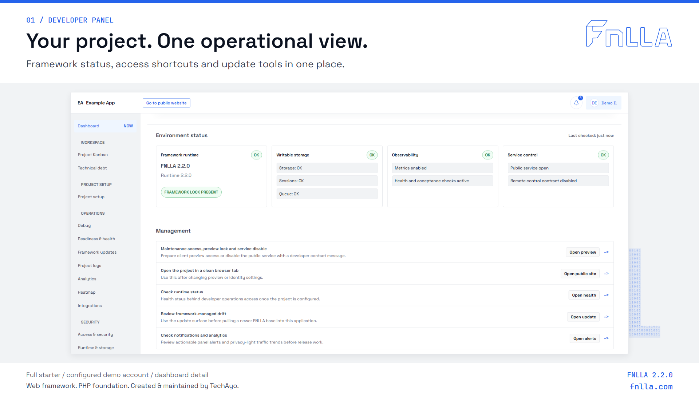
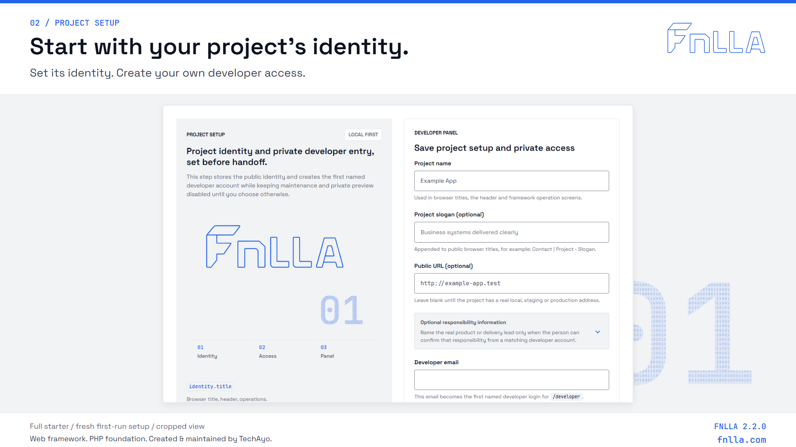
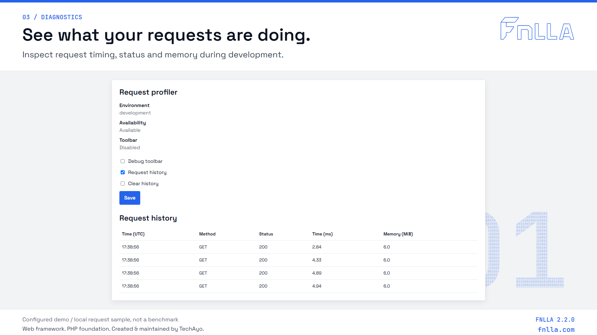
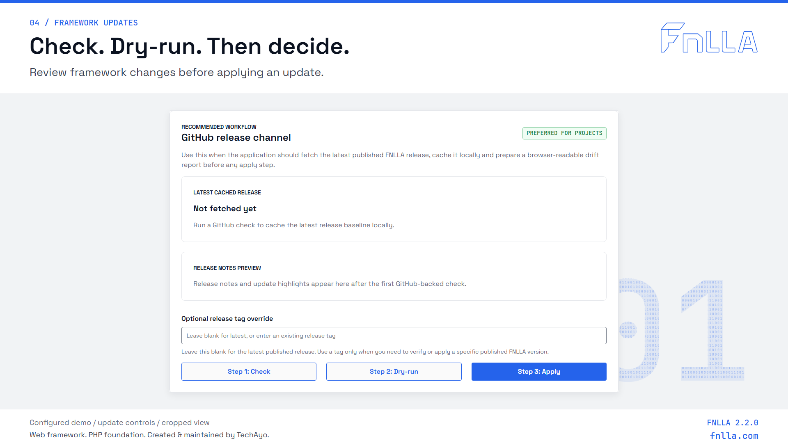
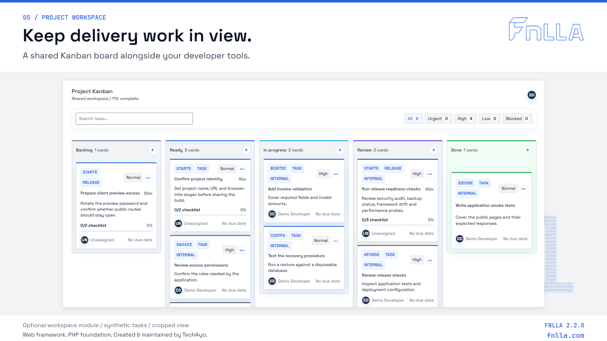
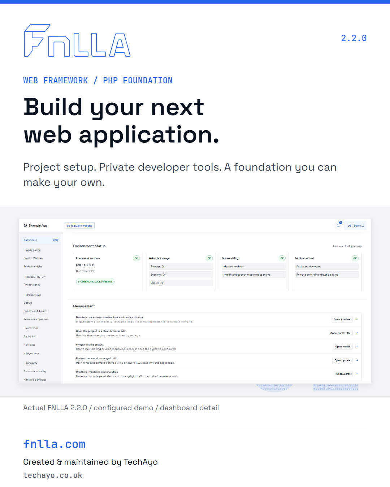
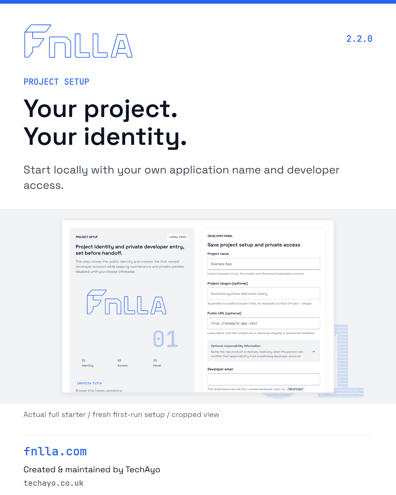
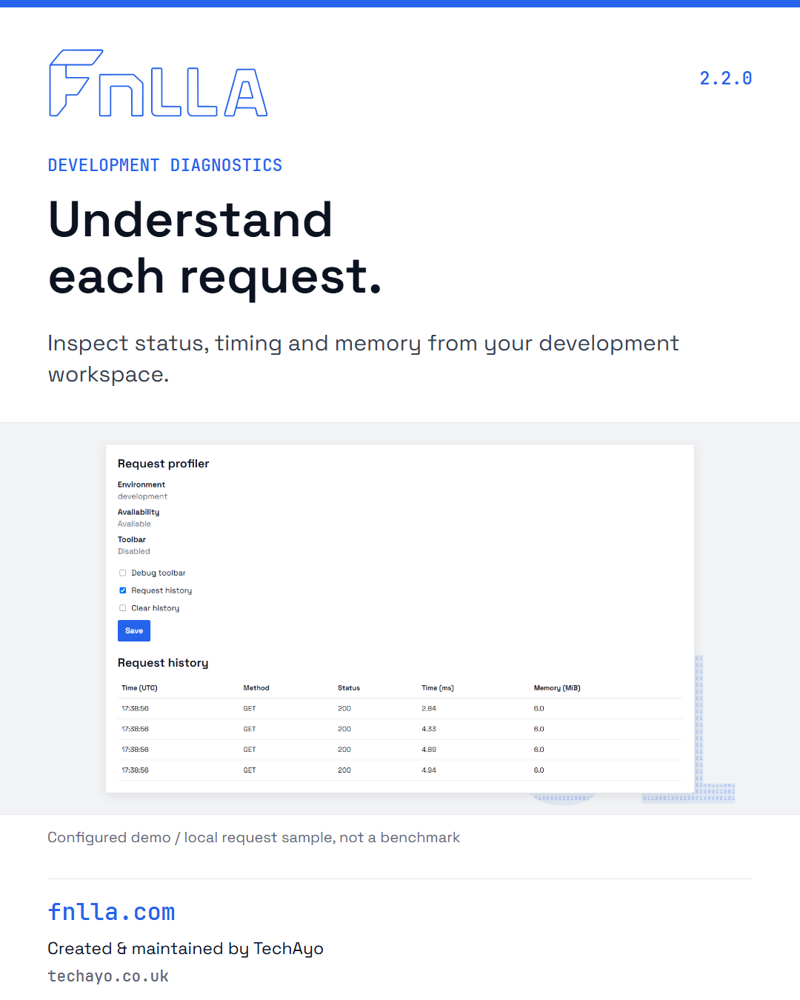
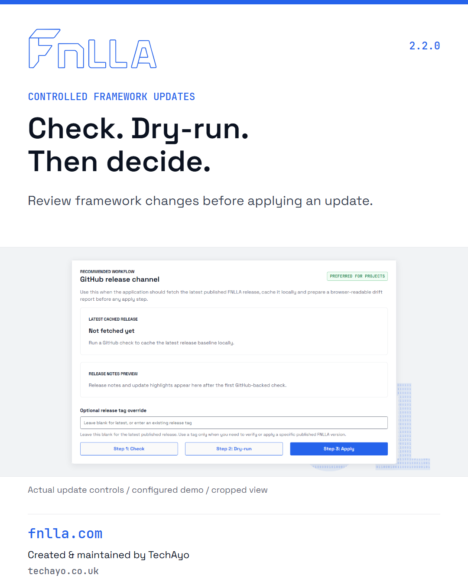
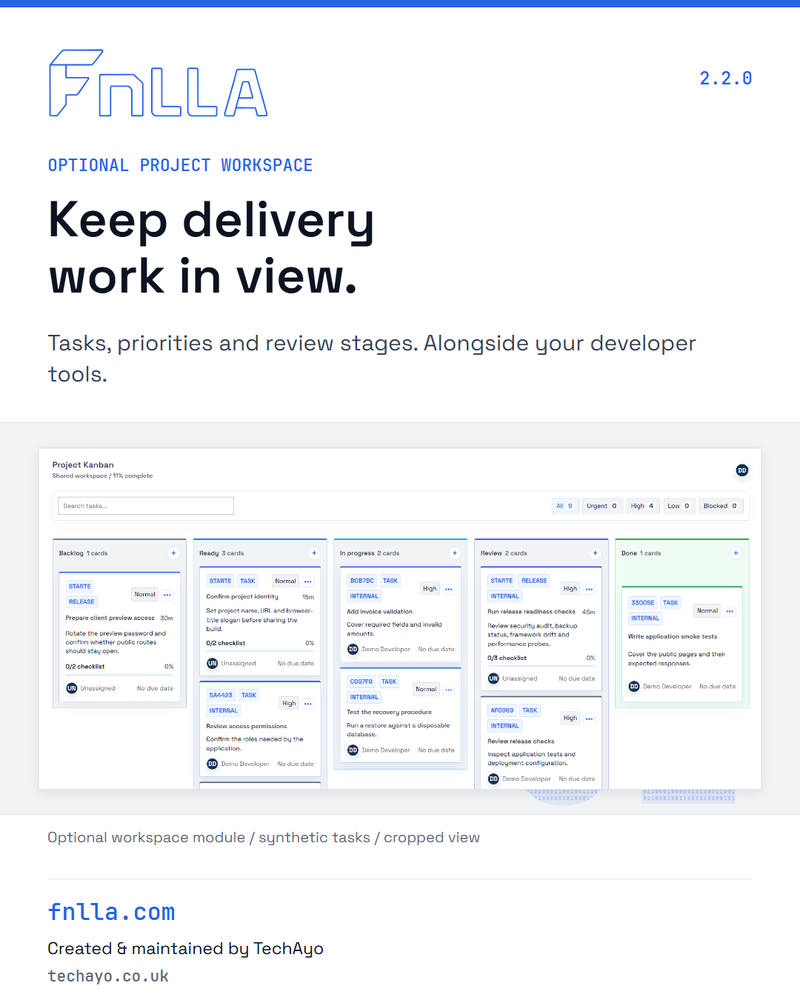
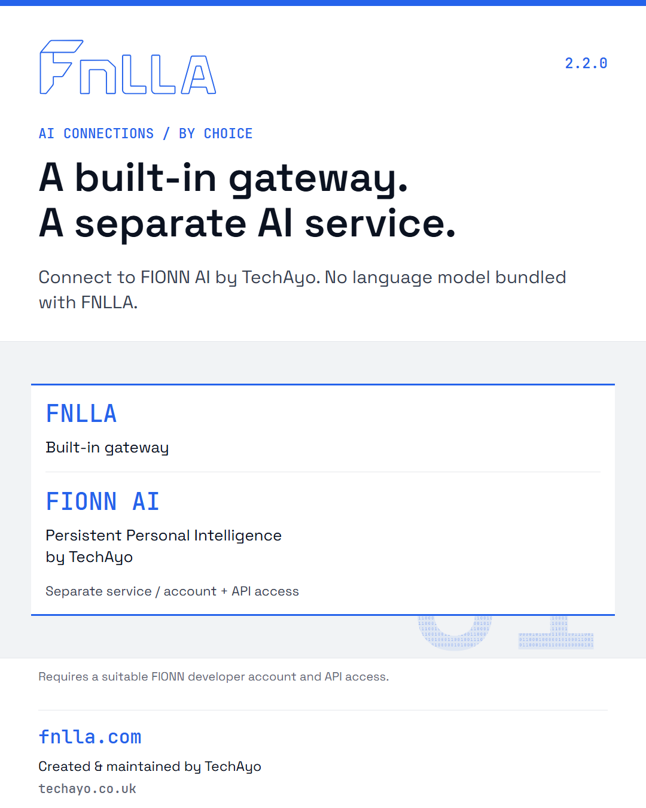
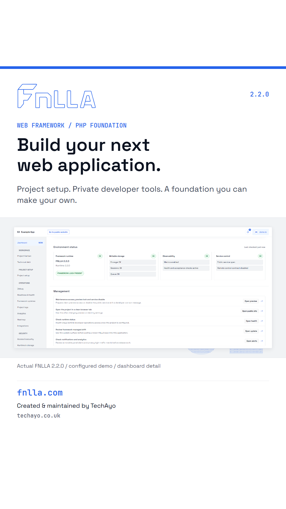
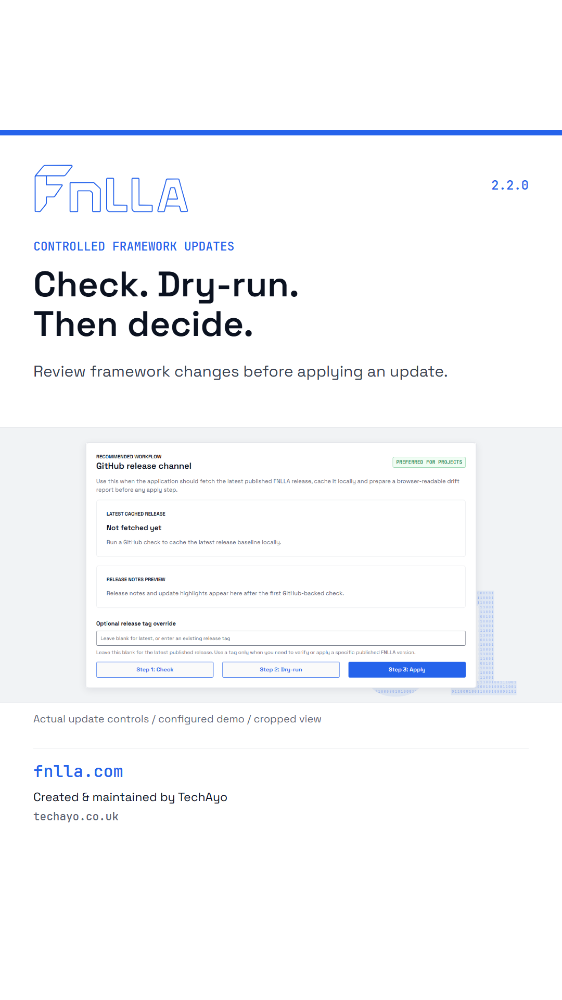
{kind=link}